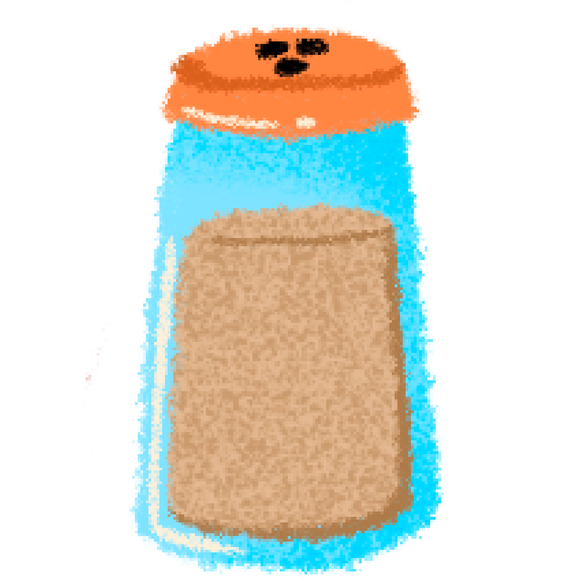

시금치 나물
시금치

물

소금

참기름

국간장

깨
시금치는 먹기 좋은 크기로 자른 뒤 흐르는 물에 깨끗하게 씻어 준비한다.
소금을 조금 넣어 끓인 물에 시금치를 살짝 데친다.
시금치를 데칠 때 소금을 넣으면 더욱 선명한 초록색의 시금치나물을 만들 수 있다.
단 너무 오래 삶으면 시금치가 물러지기 때문에 보글보글 끓으면 바로 채에 받쳐 건져 찬물에 헹구어야 한다.
데쳐진 시금치에 참기름과 국간장, 깨를 넣고 잘 무쳐준다.
손녀의 최애 나물.